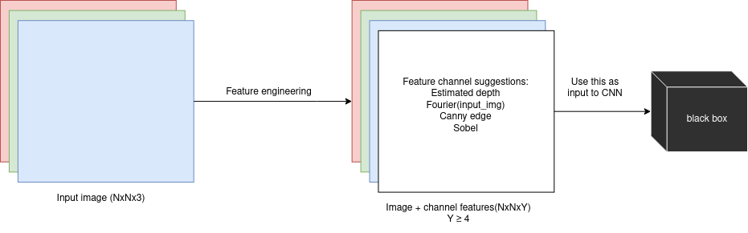

I am interested in experimenting with a novel approach to object detection. (I have been unsuccesful in finding related work regarding this theme). Rather than relying solely on RGB images, I aim to enhance the input data by adding extra channel features. By doing so, I hope to create a more nuanced and detailed representation of the images, that might be unintuitive to people, but neural networks might understand it. (I may be wrong idk)

#TODO: obj det na canny + depth slikama #TODO: definicja preko skupova
Some of “channel features” I think are worth testing out:
Estimated depth RGB->RGBD (1024x1024x3 input ->1024x1024x4 input), as part of my research I’ve read many papers that focus on networks for monocular depth estimation such as this one Boosting monocular depth and I think it would be interesting to use estimated depth as a channel feature in object detection; also open for consideration is applying simple image thresholding to this depth map, the threshold can be a hyperparameter or maybe even a learnable parameter in the network somehow, that would require a slightly different approach.
Applying the Fourier transform to images to construct potentially powerful channel features. As part of my research, I have also read several papers that use NeRFs. Inspired by the way Mildenhall et al. use positional encoding in chapter 5.1 in the NeRF paper I would like to try out a similar approach - but for object detection.
Canny edge feature RGB->RGBC, applying the canny edge algorithm on an image and using that grayscale image as a feature, this is my least favorite featureof the 4, because of the way CNNs work, but I think it still has enough potential to warrant experiments.
Sobel features - maybe something interesting could be achieved by applying a sobel operator to the input image - also can be a learnable parameter if it seems like something worth exploring
CLIP embedding of the image ? ? - as seen in stable diffusion
One of my colleagues suggested a different approach where you take features from say the middle of the depth estimation network and concat those features to the features extracted from the rgb image. This is also something i consider worth exploring
I feel like a similar approach is being done by Zhang et al. in the ControlNet paper the way they kinda nudge the network towards what they want it to do - i think same results could be achieved in object detection networks as well potential related work: this 24 page paper xd If you have any suggestions or critiques on this work feel free to contact me at jeronim96@gmail.com